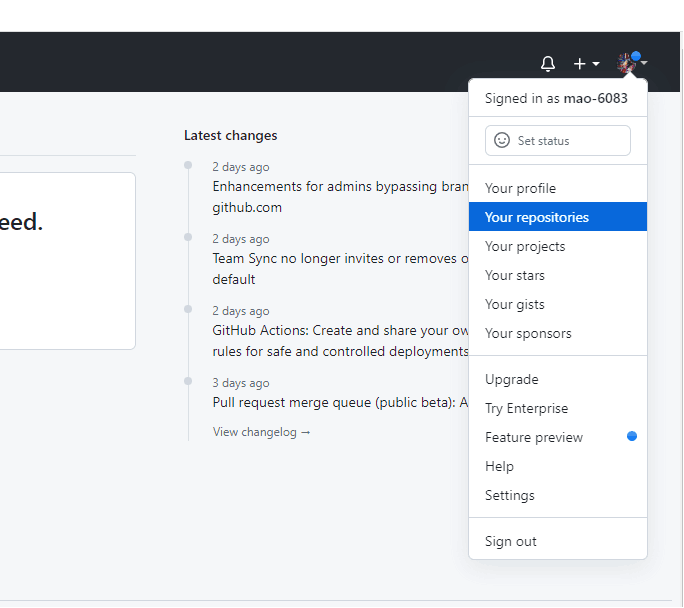

第一篇博客
GitHub Pages + Hexo搭建个人博客
第一步：准备工作
1.GitHub账号
需要有一个GitHub账号，没有的话到官网申请一个。
2.安装Git
在自己电脑上安装好Git，hexo部署到GitHub时要用。
3.安装NodeJS
在自己电脑上安装好NodeJS，Hexo是基于NodeJS编写的，所以需要安装NodeJS和npm工具。
第二步：创建仓库
在GitHub上创建一个新的代码仓库用于保存我们的网页。
首先登录我们自己的GitHub账号。进行如下操作：

点击New按钮，进入仓库创建页面。
填写仓库名，格式必须为<用户名>.github.io，然后点击Create repository。
点击creating a new file创建一个新文件，作为我们网站的主页。
新文件的名字必须为index.html，内容先随便写一个简单的，内容示例如下，填写之后点击Commit new file提交。
1 | |

GitHub Pages中找到我们主页的地址
浏览器中访问上述地址，成功即可。当然这里创建的网页是非常简陋的，只是为了演示下GitHub Pages的使用方式。
第三步：安装hexo
我们采用Hexo来创建我们的博客网站，Hexo 是一个基于NodeJS的静态博客网站生成器，使用Hexo不需开发，只要进行一些必要的配置即可生成一个个性化的博客网站，非常方便。点击进入官网
1 | |
浏览器访问 http://localhost:4000，页面默认主图风格如下
第四步：更换主题
Hexo 默认的主题不太好看，不过官方提供了数百种主题供用户选择，可以根据个人喜好更换，官网主题点 这里 查看。这里以 Fluid为基础进行讲解的。
以下安装步骤摘自 Fluid官网
安装主题
下载 最新 release 版本 解压到 themes 目录，并将解压出的文件夹重命名为 fluid。
指定主题
1 | |
创建成功后，编辑博客目录下 /source/about/index.md，添加 layout 属性。修改后的文件示例如下：
1 | |
本地启动
1 | |
浏览器访问 http://localhost:4000，`Fluid`主题风格页面如下
第五步：创建文章
如下修改 Hexo 博客目录中的 _config.yml，打开这个配置是为了在生成文章的时候生成一个同名的资源目录用于存放图片文件。
1 | |
执行完成后在source\_posts目录下生成了一个md文件和一个同名的资源目录(用于存放图片)
图片的引入方式可参考官方文档 https://hexo.io/zh-cn/docs/asset-folders.html，有详细介绍。这里就不再演示。
1 | |
第六步：个性化页面展示
该部分因个人喜好而定，因为我本人也是参照的官方用户手册，就不再赘述。文档地址
第七步：发布到githu Pages
安装hexo-deployer-git
1 | |
修改根目录下的 _config.yml，配置 GitHub 相关信息
1 | |
其中 token 为 GitHub 的 Personal access tokens，获取方式如下图
部署到Github
1 | |
浏览器访问 https://用户名.github.io/，部署成功